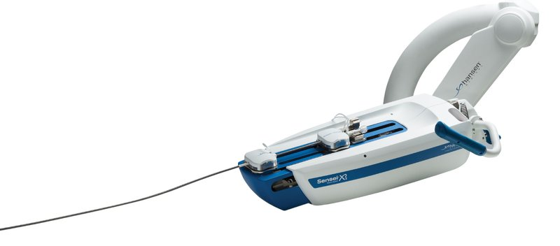

Commercial and clinical-stage systems · sensei_hansen2007
Sensei X
Sensei / Sensei X

1 / 3


- Family
- Commercial and clinical-stage systems (commercial)
- Devices
- proprietary robotically steerable sheath (Artisan / Artisan Extend control catheter, inner and outer guide) carrying a mapping catheter (Boston Scientific Polaris-Dx or St. Jude Livewire per the indications) (hansen2016_sensei-x2_BROCHURE pp. 3, 6); outer 14 F per ren2023_critical; 14/10.5 F per mandhumula2025_robotic
- Degrees of freedom
- 6 (li2024_design Table I)
- Push
- Tip-actuated
- Twist
- Tendon bending only
- Tested up to
- Human
- Sim-to-real
- None found — No simulation-trained controller found for this robot.
Testing
- Highest level
- Human
- What was tested
- EP clinical use: over 14,000 procedures, 26 studies, over 2,700 patients studied (brochure p. 5, company figures)
- Key numbers
- radiation time 17.0 -> 11.0 (35% reduction; axis unit printed 'mm') at one hospital after starting a Sensei programme (brochure p. 5, citing Kaplan 2013); 2x tip stability vs a manual catheter (company bench data, brochure p. 4)
Mechanism
- Push (translation)
- tendon/tip-actuation
- Twist (rotation)
- tendon-driven bending
- Device range
- inner guide bends up to 275 degrees, outer guide 90 degrees articulation (brochure p. 3); auto-retract from 1 mm per half second to 10 mm/s with 1 mm precision; motion scaling 4:1, 3:1 or 2:1 (brochure p. 4)
- Target anatomy
- cardiac EP
Sensing and interface
- Force sensing
- IntelliSense distal contact force estimate with visual/vibration cue; 'Intellisense Fine Force Technology' shown in visual and tactile formats (brochure p. 4)
- Leader and haptics
- remote physician workstation with monitors and a motion controller (brochure p. 2 photo); IntelliSense vibration cue only
- Imaging
- integrates 3D mapping (CARTO, EnSite Velocity), ICE, fluoroscopy and EKG recording (brochure pp. 2-3)
- Sterility
- Sensei System Artisan Drape (8 pack, cat. no. 06196) (brochure p. 6)
Size
- Footprint (mm)
- N.R.
- Mass (kg)
- N.R.
Simulation
- Simulation model
- none found
- Sim-trained controller
- none found
Versions
- Lineage
- Sensei, Sensei X, Sensei X2 (catalogue no. SRS200; brochure LT0200 Rev. B, (c) 2014) (discontinued)
Sources
- Robotic Systems Design in Endovascular Treatment · IEEE Transactions on Medical Robotics and Bionics, 2024 · doi:10.1109/tmrb.2024.3377374 [li2024_design]
- The Critical Technologies of Vascular Interventional Robotic Catheterization: A Review · IEEE Sensors Journal, 2023 · doi:10.1109/jsen.2023.3320356 [ren2023_critical]
- Robotic Systems in Cardiovascular Interventions: Evolving Platforms and the Path Forward · Methodist DeBakey Cardiovascular Journal, 2025 · doi:10.14797/mdcvj.1652 [mandhumula2025_robotic]
- Robotics in neurointerventional surgery: a systematic review of the literature · Journal of NeuroInterventional Surgery, 2021 · doi:10.1136/neurintsurg-2021-018096 [crinnion2022_robotics]
- The Catheter and Guidewire Operating Systems of Vascular Interventional Surgical Robots: A Systematic Review · IEEE Transactions on Medical Robotics and Bionics, 2023 · doi:10.1109/tmrb.2023.3272049 [chen2023_operating]
- Sensei X2 Robotic Catheter System brochure (LT0200 Rev. B) · no DOI on file [hansen2016_sensei-x2_BROCHURE]
Notes
- Notes
- Commercially discontinued; Hansen bought by Auris 2016 (US$80M), Auris by J&J 2019 (US$3.4B) (S8 via chen2023_operating). FDA record not opened. | X2 2026-11-08: Sensei X2 brochure read in full (press material, internal use).
This record
- Read level
- abstract — brochure (full, hansen2016_sensei-x2_BROCHURE); abstract (S8)
- Picture
- Hansen Medical "Sensei X2 Brochure_US LT0200 Rev. B" p2 embedded image xref 10 with its soft mask, from https://web.archive.org/web/2016id_/http://www.hansenmedical.com:80/sites/default/files/blob-file/Sensei%20X2%20Brochure_US%20LT0200%20Rev.%20B_2.pdf ↗ — licence: press image (Hansen Medical marketing brochure, archived; company defunct, assets now J&J/Auris); grade A
- Picture changes
- image + soft mask, cropped to (0,0)-(2592,1140), flattened on white; cut = brochure soft mask (no SAM)
- Found by
- commercial: Search of commercial and clinical-stage systems.
- Data
- JSON · YAML:
records/robots/sensei_hansen2007.yaml - Correction
- Suggest a correction [repository not created yet]